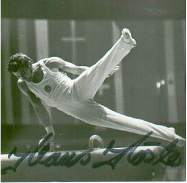

1972 Olympic V Champion
1971 and 1973 European HB Champion

Medal Total
Olympic
Games:
1 Gold, 3 Bronze
World Championships: 2 Bronze
European Championships:
2 Gold, 1 Silver, 3 Bronze
Koste was born in February 1943 in Frankfurt (Oder). He was the holder of 33 GDR titles -- he won the first one (for R) in 1961 and the last one (for HB) in 1973. Koste competed in 3 Olympics, and was the first GDR gymnast to make it to an Olympic final (4th on HB in 1968). At age 31, he learned a double back somi on FX which he debuted at the 1974 GDR Championships (using additional floor mats). During podium training at the 1974 Varna world championships, Koste tore his Achilles. He and his wife had three children: Matthias, Michael and Tanja. He was voted one of the ten best German gymnasts of the 20th century by his country's sports writers. He died in December 2012.
Competition Results
1961
GDR Championships: 2nd FX
1962
GDR Championships: 2nd AA, 1st FX, 1st V, 3rd PB, 3rd HB, 6th PH
GDR-UAR Dual Meet: 1st Team, 1st AA
World Championships: 8th Team, 33rd AA
1963
BUL-GDR Dual Meet: 2nd Team, 5th AA
GDR Championships: 5th AA, 1st FX, 2nd PB, 3rd V, 5th HB
GDR-CSSR Dual Meet: 2nd Team, 1st AA
GDR-POL Dual Meet: 2nd Team, 9th AA
1964
GDR-POL Dual Meet: 1st Team, 2nd AA
GDR-ROM Dual Meet: 1st Team, 4th AA
GDR-USSR Dual Meet: 2nd Team, 8th AA
Olympics: 3rd Team*, 18th AA
1967
GDR Championships: 3rd AA, 1st PB, 3rd FX, 3rd R, 3rd V, 6th PH
GDR-CSSR Dual Meet: 1st Team, 3rd AA
GDR-ROM Dual Meet: 1st Team, 2nd AA
Pre-Olympics: 14th AA
SWE-GDR Dual Meet: 1st Team, 1st AA
1968
GDR Championships: 1st AA, 1st FX, 1st PH, 1st R, 1st PB, 1st HB,
3rd V
GDR-CSSR Dual Meet: 1st Team, 2nd AA
GDR-JPN Dual Meet: 2nd Team, 3rd AA, 1st HB, 2nd FX, 3rd V, 4th R, 4th PB, 5th PH
GDR-USSR Dual Meet: 2nd Team, 12th AA
Olympic Games: 3rd Team, 16th AA, 4th HB
1969
European Championships: 27th AA, 5th R, 6th HB
GDR Championships: 1st AA, 1st FX, 1st PB, 1st HB, 5th V, 6th R
USSR-GDR-FIN: 2nd Team, 4th AA, 1st FX, 3rd V, 3rd HB
1970
Chunichi Cup: 6th AA
GDR Championships: 1st AA, 1st FX, 1st V, 1st PB, 1st HB, 2nd R, 6th PH
GDR-BUL-POL Tri Meet: 1st Team, 1st AA
GDR-CSSR-SUI Tri Meet: 1st Team, 1st AA
GDR-USSR Dual Meet: 2nd Team, 6th AA, 1st FX, 2nd R, 2nd V, 3rd PB, 7th HB
Riga International: 7th AA, 2nd V, 3rd FX, 3rd PB
World Championships: 3rd Team, 14th AA, 3rd HB
1971
European Championships: 4th AA, 1st HB, 2nd
PB, 3rd V, 6th FX
GDR-ROM Dual Meet: 1st Team, 1st AA
GDR-PRK Dual Meet: 1st Team, 1st AA
GDR-USSR Dual Meet: 1st Team, 1st AA
Riga International: 6th AA, 5th PB, 6th FX
1972
GDR-SUI Dual Meet: 1st Team, 7th AA
GDR-USSR Dual Meet: 2nd Team, 5th AA
GDR-YUG Dual Meet: 1st Team, 2nd AA
Olympics: 3rd Team, 6th AA, 1st V,
5th FX, 5th R
1973
Chunichi Cup: 9th AA
European Championships: 3rd AA, 1st HB, 3rd
FX, 4th PB
GDR-JPN Dual Meet: 2nd Team, 2nd AA
GDR-SUI Dual Meet: 1st Team, 3rd AA
* A unified German team competed at the 1964 Olympics.
This page was created on March 18, 2000
and was last updated on September 03, 2022.
© Gymn Forum